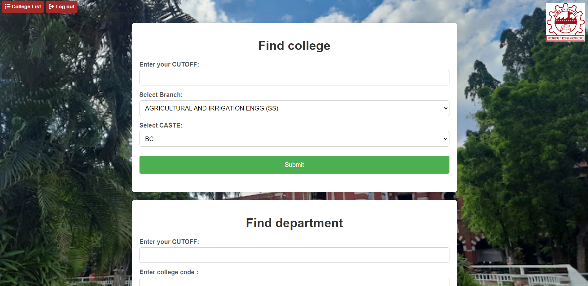
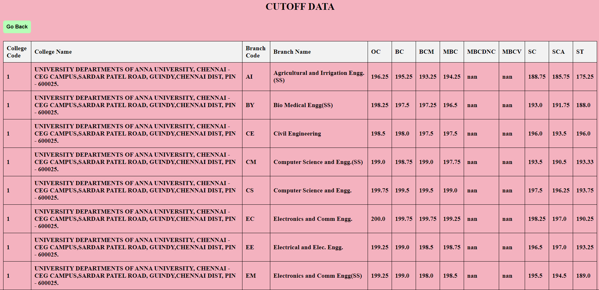

DEVELOPING A SUGGESTIVE MODEL THAT INTEGRATES COUNSELING MARKS TO ENHANCE EQUITY AND FAIRNESS IN STUDENT SELECTION
The Tamil Nadu Engineering Admissions (TNEA) counseling process represents a pivotal juncture for aspiring engineering students, determining their academic journey and future career prospects. However, the current system for selecting colleges within TNEA relies heavily on subjective guidance, limited information access, and manual processes, leading to suboptimal college choices. To address these challenges, this project proposes the development of a data-driven College Suggestion System for TNEA counseling. Primary objective of this system is to empower students and their families with a robust platform that offers personalized college recommendations based on individual 12th-grade cutoff scores, academic preferences, and career goals. By leveraging historical data on cutoff scores, admission trends, and other relevant factors, the system seeks to provide students with accurate and data-driven insights into their admission probabilities at various colleges. Key features of the proposed system include comprehensive and up-to-date information about participating colleges, streamlined data retrieval and analysis, and user-friendly interfaces for easy access. The system aims to minimize the likelihood of suboptimal college choices, improve transparency in the admissions process, and encourage data- driven decision-making among TNEA counseling participants. Through this project, we aspire to enhance the overall efficiency, fairness, and user experience of the college selection process within TNEA counseling. By aligning students with institutions that match their academic performance and aspirations, we aim to contribute to their long-term success and the advancement of the engineering education landscape in Tamil Nadu.
Download Project
Download the complete project and then when do few steps which I have mentioned below to make this project successfull.
Download ProjectInstall packages
To make this project successful, you need to install some libraries. First, ensure that Python IDLE is installed on your system also check whether pip is installed, as it will help you import the libraries. Open the app.py in Edit with IDLE option
Scikit-learn
scikit-learn 1.3.2 installs the specified version 1.3.2 of the scikit-learn library, a Python package for machine learning, into your environment. This library provides essential tools for data preprocessing, model training, evaluation, and prediction, making it a cornerstone for various machine learning tasks, including classification, regression, clustering, and more.
pip install scikit-learn==1.3.2
Upgrade pip
The command python.exe -m pip install --upgrade pip is used to update the pip package manager to its latest version. pip is a tool for installing and managing Python packages, and keeping it up-to-date ensures you have access to the latest features and bug fixes, improving your package management experience and potentially resolving issues during installation or usage of other packages.
python.exe -m pip install --upgrade pip
Upgrade pip user
The command python.exe -m pip install --upgrade pip --user is used to update the pip package manager for Python on your system. Pip is a tool for installing and managing Python packages, and keeping it up-to-date ensures you can effectively install and manage the latest libraries for your Python projects. The --user flag specifies that the upgraded pip should be installed for the current user, without requiring administrative privileges.
python.exe -m pip install --upgrade pip --user
Pandas
Pandas is a powerful Python library primarily used for data manipulation and analysis. It provides high-performance, easy-to-use data structures and data analysis tools, making it a cornerstone for data scientists and analysts. With Pandas, you can efficiently handle, clean, explore, and transform diverse datasets, from CSV files to SQL databases, laying the groundwork for further analysis and modeling.
pip install pandas
Flask
Flask is a lightweight Python web framework that simplifies the process of building web applications. It offers a flexible foundation for creating web applications of varying complexities, from small-scale projects to larger-scale systems. Flask provides essential tools and functionalities, allowing developers to focus on application logic rather than reinventing the wheel for common web development tasks. Its minimalistic approach promotes rapid development and scalability, making it a popular choice for both beginners and experienced Python developers.
pip install flask
SignUp Page
The sign-up and login page is designed with a clean and intuitive user interface, ensuring that users can easily navigate and interact with the system. The use of HTML for the frontend allows for a highly customizable and visually appealing design, which can be tailored to meet the specific needs and branding of the project. This enhances user engagement and satisfaction. By leveraging Python for the backend, the project provides real-time sign-in and login features. This ensures that users can instantly access the system without delays, making the process smooth and efficient. Real-time authentication is crucial for maintaining user engagement and providing immediate feedback, which is especially important in applications where timely access is essential. Using Python for backend development allows the implementation of robust security measures to protect user data. Features such as encrypted passwords, secure session management, and validation checks help safeguard sensitive information. Ensuring data integrity and security builds user trust and complies with data protection regulations. The system’s architecture, combining Python for backend and HTML for frontend, offers great scalability. This means that as the number of users grows, the system can efficiently handle increased traffic and user data without compromising performance. The flexibility of Python allows for easy integration with other services and APIs, enabling the addition of new features and functionalities as needed. Python’s readability and ease of use make it an ideal choice for backend development. It allows developers to write clean and maintainable code, which simplifies the process of updating and maintaining the application. Additionally, the vast array of libraries and frameworks available in Python can accelerate development and provide solutions for common tasks. The use of standard web technologies (HTML, CSS, JavaScript) for the frontend ensures that the application is accessible across various devices and platforms. Users can access the sign-up and login page from desktops, tablets, and smartphones, providing a seamless experience regardless of the device used. The project’s design and functionality can be easily customized to cater to specific user requirements. Personalization features can be integrated to enhance user experience, such as personalized welcome messages or customized user dashboards based on individual preferences. The project combines a user-friendly interface with real-time functionality, robust security, scalability, and ease of maintenance. These advantages make it a strong foundation for any application requiring reliable and efficient user authentication, contributing to a superior overall user experience.

Home Page
The project is developed for finding colleges and departments offers numerous advantages, particularly in terms of functionality, user experience, and backend efficiency. The integration of Python for the backend ensures robust and efficient data handling, allowing for real-time sign-in and login features that significantly enhance user convenience. Users can enter their cutoff marks, select their preferred branch, and caste to receive tailored recommendations, streamlining the college search process. This feature is especially beneficial for students navigating complex admission criteria, providing them with personalized and accurate college options based on their academic credentials. The project's frontend, built using HTML, provides a clean and user-friendly interface, making it easy for users to interact with the system. The layout is intuitive, with clearly labeled fields and buttons that guide users through the process of finding suitable colleges and departments. The visual appeal of the interface, combined with its practical functionality, ensures a positive user experience. The use of real-time features in the authentication process enhances security and ensures that users have immediate access to the system upon logging in. This reduces wait times and improves the overall efficiency of the system. The project's design also ensures scalability, allowing it to handle an increasing number of users and data without compromising performance. The project not only simplifies the college admission process for students but also assists educational institutions in managing their admissions more effectively. By providing accurate and timely information, it helps optimize resource allocation and decision-making processes, benefiting both students and colleges. Overall, the project stands out for its combination of real-time functionality, user-friendly design, and robust backend support, making it a valuable tool in the educational landscape.
College List
The college list feature is developed for displaying cutoff data under various categories, such as branch code and caste, offers significant advantages for students navigating the college admission process. This tool provides a comprehensive and organized view of cutoff marks for different colleges and branches, making it easier for students to compare their options based on their academic performance and preferences. By categorizing the data according to branch codes and caste, the system ensures that users can quickly find the most relevant information tailored to their specific needs, enhancing the efficiency and accuracy of their college selection process. The backend development using Python ensures that the data is handled efficiently, allowing for quick retrieval and display of information. This real-time feature is crucial for students who need up-to-date information to make informed decisions. The frontend, created using HTML, offers a clean and user-friendly interface that simplifies interaction. The intuitive layout, with clearly labeled fields and buttons, guides users through the process of finding suitable colleges based on their cutoff marks, branch preferences, and caste category. This design ensures a positive user experience by making the information accessible and easy to navigate. Additionally, the inclusion of a "Go Back" button provides a seamless user experience, allowing users to easily return to the previous page without losing their search context. This enhances the overall usability of the system, ensuring that users can navigate through different sections of the application with ease. The visually appealing and functional design of the college list page further contributes to a smooth and efficient user journey. This college list feature not only aids students in making informed decisions by providing them with detailed and categorized cutoff data but also improves the overall efficiency of the college admission process. By offering a comprehensive, user-friendly, and real-time solution, this tool stands out as a valuable resource for students aiming to find the best college options that match their academic qualifications and preferences.
